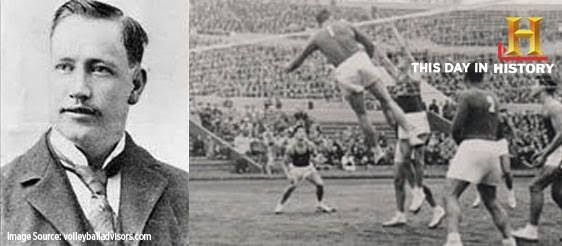
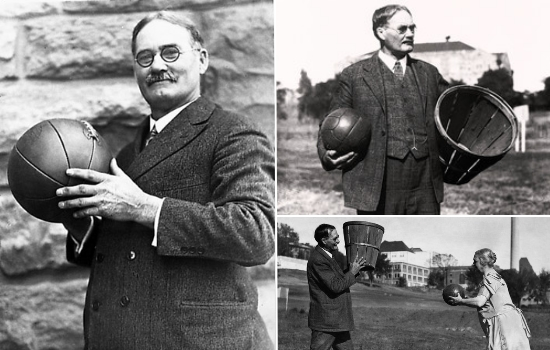

El voleibol fue creado el 9 de febrero de 1895 por William G. Morgan, director de educación física de la YMCA en Holyoke, Massachusetts, Estados Unidos, quien buscaba un deporte de interior alternativo, de bajo costo y sin contacto físico para sus alumnos adultos de negocios que encontraban el baloncesto demasiado intenso. Diseñado originalmente bajo el nombre de "Mintonette", el juego combinaba una red de tenis elevada a 1.98 metros, el uso de las manos del balonmano, la estructura de "entradas" del béisbol y el balón del baloncesto; poco después, en 1896, el profesor Alfred T. Halstead sugirió rebautizarlo como volleyball tras notar durante una exhibición que la clave del juego consistía en golpear el balón en el aire ("de volea") de un lado a otro. Tras mandar a fabricar el primer balón oficial de cuero con la compañía Spalding para sustituir la pesada pelota de baloncesto y la ligera cámara interna, el deporte se expandió rápidamente por Canadá, Asia y Europa gracias a los misioneros de la YMCA y el masivo despliegue de los soldados estadounidenses durante la Primera Guerra Mundial. Su normativa evolucionó drásticamente en las décadas siguientes: en 1912 se fijaron los 6 jugadores por equipo y se introdujo la rotación obligatoria de posiciones para que todos pasaran por el saque, en 1916 se inventó en Filipinas el estilo ofensivo de "remate y colocación" (llamado bomba o bomberino) cambiando la altura de la red y el peso del balón, y en 1922 se limitó el juego a un máximo de 3 toques por lado y se prohibió retener la pelota para evitar que los equipos ralentizaran el juego indefinidamente. El crecimiento global definitivo llevó a la fundación de la Federación Internacional de Voleibol (FIVB) en París en 1947 bajo el liderazgo de Paul Libaud, la celebración del primer Campeonato Mundial masculino en Praga (1949) y femenino en Moscú (1952), y su consagración definitiva como deporte olímpico en los Juegos de Tokio 1964, donde la Unión Soviética y Japón ganaron los primeros oros. A finales del siglo XX y principios del XXI, el deporte continuó revolucionando su dinamismo con la inclusión oficial del voleibol de playa en el programa olímpico de Atlanta 1996, la introducción en 1998 de la figura del "líbero" —un jugador especialista en defensa que viste un uniforme de distinto color y no puede rematar ni sacar—, y la histórica eliminación del antiguo sistema de cambio de saque en el año 2000, adoptando el formato actual de "punto por jugada" (rally point system) a 25 puntos para hacer los partidos mucho más predecibles en tiempo, ágiles para las transmisiones televisivas y emocionantes para los aficionados de todo el mundo.